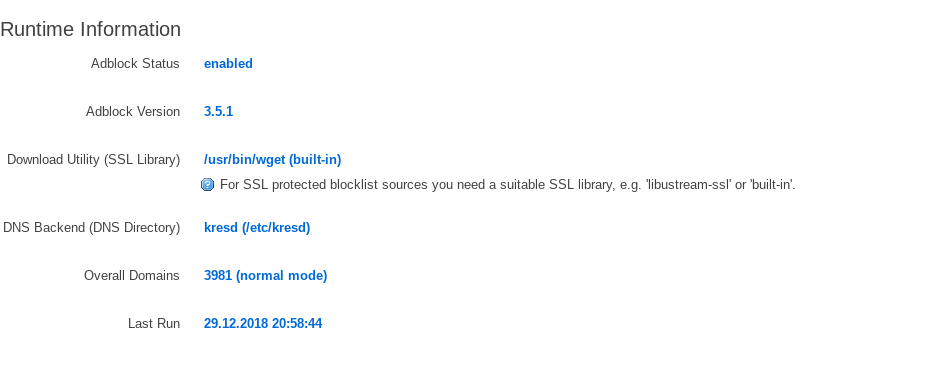

Adblocking in Turris Omnia
As a long time Firefox user I was horrified to use web browser with very limited blocking capabilities. However Samsung Browser is very handy tool for some sites. However the number of spam, scam, or porn pages and advertisements makes browsing there very unpleasant experience. Especially if your kids want to browse that way.
However I bought Turris Omnia especially because I wanted to hack around.

Source: turris.cz
Options
As router provides Doman Name Service for all devices in local network, the most common way is to block DNS lookups for specified domains. It turns out there are three options available for Turris (or OpenWrt, the base operating system of Turris).
- Pi Hole (Turris doc)
- OpenWrt Adblock (Turris doc)
- OpenWrt Simple Adblock (Turris doc not available)
As user of Turris I can skip simple-adblock simply because it is not available there by default and it works with dnsmasq only. So there are two options only. And to be honest, simply reading the documentation it became clear that
- Pi Hole
- Is a complex solution with providing more than simple adblocking, including graphs, statistics and so. It must run in own LXC container and DHCP must be properly configured to be served by LXC container.
- Adblock
- Just install two packages
adblockandluci-app-adblockand that's it. Adblock integrates withkresd(Knot DNS Resolver) natively, so there is very little to do.
adblock simply convert all the sources to /etc/kresd/adb_list.overall, which is DENY policy file for Knot resolver. For network tools blocked domains appears as not existing.
Not everything is blocked
In theory community maintained lists shall be enough, but the disadvantage of adblock is that you never know if new source will block site you want to or not. I did not find better way than downloading all the lists from adblock.conf and grepping the results. Fortunately adblock comes with local blacklist, so admin can block additional domains by editing /etc/adblock/adblock.blacklist.
So surprisingly, thanks OpenWrt community, is adblocking on router almost easy as installing extension for the browser.
